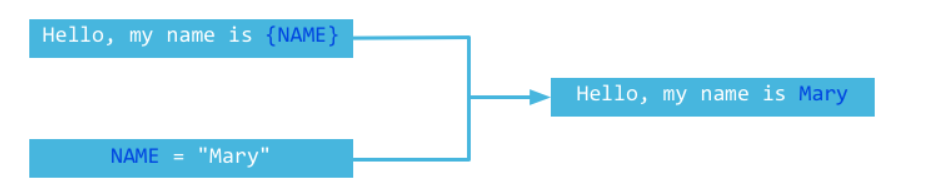

GO模板处理
This page updated at: 2018/12/29
什么是模板
你一定听说过一种叫做MVC的设计模式，Model处理数据，View展现结果，Controller控制用户的请求，至于View层的处理，在很多动态语言里面都是通过在静态HTML中插入动态语言生成的数据，例如JSP中通过插入<%=....=%>，PHP中通过插入<?php.....?>来实现的。
通过下面这个图可以说明模板的机制

Web应用反馈给客户端的信息中的大部分内容是静态的，不变的，而另外少部分是根据用户的请求来动态生成的，例如要显示用户的访问记录列表。用户之间只有记录数据是不同的，而列表的样式则是固定的，此时采用模板可以复用很多静态代码。
Go模板使用
在Go语言中，我们使用template包来进行模板处理，使用类似Parse、ParseFile、Execute等方法从文件或者字符串加载模板，然后执行类似上面图片展示的模板的merge操作。请看下面的例子：
func handler(w http.ResponseWriter, r *http.Request) {
t := template.New("some template") //创建一个模板
t, _ = t.ParseFiles("tmpl/welcome.html") //解析模板文件
user := GetUser() //获取当前用户信息
t.Execute(w, user) //执行模板的merger操作
}
通过上面的例子我们可以看到Go语言的模板操作非常的简单方便，和其他语言的模板处理类似，都是先获取数据，然后渲染数据。
为了演示和测试代码的方便，我们在接下来的例子中采用如下格式的代码
- 使用Parse代替ParseFiles，因为Parse可以直接测试一个字符串，而不需要额外的文件
- 不使用handler来写演示代码，而是每个测试一个main，方便测试
- 使用
os.Stdout代替http.ResponseWriter，因为os.Stdout实现了io.Writer接口
模板中如何插入数据？
上面我们演示了如何解析并渲染模板，接下来让我们来更加详细的了解如何把数据渲染出来。一个模板都是应用在一个Go的对象之上，Go对象的字段如何插入到模板中呢？
字段操作
Go语言的模板通过{{}}来包含需要在渲染时被替换的字段，{{.}}表示当前的对象，这和Java或者C++中的this类似，如果要访问当前对象的字段通过{{.FieldName}}，但是需要注意一点：这个字段必须是导出的(字段首字母必须是大写的)，否则在渲染的时候就会报错，请看下面的这个例子：
package main
import (
"html/template"
"os"
)
type Person struct {
UserName string
}
func main() {
t := template.New("fieldname example")
t, _ = t.Parse("hello {{.UserName}}!")
p := Person{UserName: "Astaxie"}
t.Execute(os.Stdout, p)
}
上面的代码我们可以正确的输出hello Astaxie，但是如果我们稍微修改一下代码，在模板中含有了未导出的字段，那么就会报错
type Person struct {
UserName string
email string //未导出的字段，首字母是小写的
}
t, _ = t.Parse("hello {{.UserName}}! {{.email}}")
上面的代码就会报错，因为我们调用了一个未导出的字段，但是如果我们调用了一个不存在的字段是不会报错的，而是输出为空。
如果模板中输出{{.}}，这个一般应用于字符串对象，默认会调用fmt包输出字符串的内容。
输出嵌套字段内容
上面我们例子展示了如何针对一个对象的字段输出，那么如果字段里面还有对象，如何来循环的输出这些内容呢？我们可以使用{{with …}}…{{end}}和{{range …}}{{end}}来进行数据的输出。
- {{range}} 这个和Go语法里面的range类似，循环操作数据
- {{with}}操作是指当前对象的值，类似上下文的概念
详细的使用请看下面的例子：
package main
import (
"html/template"
"os"
)
type Friend struct {
Fname string
}
type Person struct {
UserName string
Emails []string
Friends []*Friend
}
func main() {
f1 := Friend{Fname: "minux.ma"}
f2 := Friend{Fname: "xushiwei"}
t := template.New("fieldname example")
t, _ = t.Parse(`hello {{.UserName}}!
{{range .Emails}}
an email {{.}}
{{end}}
{{with .Friends}}
{{range .}}
my friend name is {{.Fname}}
{{end}}
{{end}}
`)
p := Person{UserName: "Astaxie",
Emails: []string{"astaxie@beego.me", "astaxie@gmail.com"},
Friends: []*Friend{&f1, &f2}}
t.Execute(os.Stdout, p)
}
条件处理
在Go模板里面如果需要进行条件判断，那么我们可以使用和Go语言的if-else语法类似的方式来处理，如果pipeline为空，那么if就认为是false，下面的例子展示了如何使用if-else语法：
package main
import (
"os"
"text/template"
)
func main() {
tEmpty := template.New("template test")
tEmpty = template.Must(tEmpty.Parse("空 pipeline if demo: {{if ``}} 不会输出. {{end}}\n"))
tEmpty.Execute(os.Stdout, nil)
tWithValue := template.New("template test")
tWithValue = template.Must(tWithValue.Parse("不为空的 pipeline if demo: {{if `anything`}} 我有内容，我会输出. {{end}}\n"))
tWithValue.Execute(os.Stdout, nil)
tIfElse := template.New("template test")
tIfElse = template.Must(tIfElse.Parse("if-else demo: {{if `anything`}} if部分 {{else}} else部分.{{end}}\n"))
tIfElse.Execute(os.Stdout, nil)
}
通过上面的演示代码我们知道if-else语法相当的简单，在使用过程中很容易集成到我们的模板代码中。
注意：if里面无法使用条件判断，例如.Mail=="astaxie@gmail.com"，这样的判断是不正确的，if里面只能是bool值
pipelines
Unix用户已经很熟悉什么是pipe了，ls | grep "beego"类似这样的语法你是不是经常使用，过滤当前目录下面的文件，显示含有"beego"的数据，表达的意思就是前面的输出可以当做后面的输入，最后显示我们想要的数据，而Go语言模板最强大的一点就是支持pipe数据，在Go语言里面任何{{}}里面的都是pipelines数据，例如我们上面输出的email里面如果还有一些可能引起XSS注入的，那么我们如何来进行转化呢？
{{. | html}}
在email输出的地方我们可以采用如上方式可以把输出全部转化html的实体，上面的这种方式和我们平常写Unix的方式是不是一模一样，操作起来相当的简便，调用其他的函数也是类似的方式。
模板变量
有时候，我们在模板使用过程中需要定义一些局部变量，我们可以在一些操作中申明局部变量，例如with``range``if过程中申明局部变量，这个变量的作用域是{{end}}之前，Go语言通过申明的局部变量格式如下所示：
$variable := pipeline
详细的例子看下面的：
{{with $x := "output" | printf "%q"}}{{$x}}{{end}}
{{with $x := "output"}}{{printf "%q" $x}}{{end}}
{{with $x := "output"}}{{$x | printf "%q"}}{{end}}
```
### 模板函数
模板在输出对象的字段值时，采用了`fmt`包把对象转化成了字符串。但是有时候我们的需求可能不是这样的，例如有时候我们为了防止垃圾邮件发送者通过采集网页的方式来发送给我们的邮箱信息，我们希望把`@`替换成`at`例如：`astaxie at beego.me`，如果要实现这样的功能，我们就需要自定义函数来做这个功能。
每一个模板函数都有一个唯一值的名字，然后与一个Go函数关联，通过如下的方式来关联
```Go
type FuncMap map[string]interface{}
例如，如果我们想要的email函数的模板函数名是emailDeal，它关联的Go函数名称是EmailDealWith,那么我们可以通过下面的方式来注册这个函数
t = t.Funcs(template.FuncMap{"emailDeal": EmailDealWith})
EmailDealWith这个函数的参数和返回值定义如下：
func EmailDealWith(args …interface{}) string
我们来看下面的实现例子：
package main
import (
"fmt"
"html/template"
"os"
"strings"
)
type Friend struct {
Fname string
}
type Person struct {
UserName string
Emails []string
Friends []*Friend
}
func EmailDealWith(args ...interface{}) string {
ok := false
var s string
if len(args) == 1 {
s, ok = args[0].(string)
}
if !ok {
s = fmt.Sprint(args...)
}
// find the @ symbol
substrs := strings.Split(s, "@")
if len(substrs) != 2 {
return s
}
// replace the @ by " at "
return (substrs[0] + " at " + substrs[1])
}
func main() {
f1 := Friend{Fname: "minux.ma"}
f2 := Friend{Fname: "xushiwei"}
t := template.New("fieldname example")
t = t.Funcs(template.FuncMap{"emailDeal": EmailDealWith})
t, _ = t.Parse(`hello {{.UserName}}!
{{range .Emails}}
an emails {{.|emailDeal}}
{{end}}
{{with .Friends}}
{{range .}}
my friend name is {{.Fname}}
{{end}}
{{end}}
`)
p := Person{UserName: "Astaxie",
Emails: []string{"astaxie@beego.me", "astaxie@gmail.com"},
Friends: []*Friend{&f1, &f2}}
t.Execute(os.Stdout, p)
}
上面演示了如何自定义函数，其实，在模板包内部已经有内置的实现函数，下面代码截取自模板包里面
var builtins = FuncMap{
"and": and,
"call": call,
"html": HTMLEscaper,
"index": index,
"js": JSEscaper,
"len": length,
"not": not,
"or": or,
"print": fmt.Sprint,
"printf": fmt.Sprintf,
"println": fmt.Sprintln,
"urlquery": URLQueryEscaper,
}
Must操作
模板包里面有一个函数Must，它的作用是检测模板是否正确，例如大括号是否匹配，注释是否正确的关闭，变量是否正确的书写。接下来我们演示一个例子，用Must来判断模板是否正确：
package main
import (
"fmt"
"text/template"
)
func main() {
tOk := template.New("first")
template.Must(tOk.Parse(" some static text /* and a comment */"))
fmt.Println("The first one parsed OK.")
template.Must(template.New("second").Parse("some static text {{ .Name }}"))
fmt.Println("The second one parsed OK.")
fmt.Println("The next one ought to fail.")
tErr := template.New("check parse error with Must")
template.Must(tErr.Parse(" some static text {{ .Name }"))
}
将输出如下内容
The first one parsed OK.
The second one parsed OK.
The next one ought to fail.
panic: template: check parse error with Must:1: unexpected "}" in command
嵌套模板
我们平常开发Web应用的时候，经常会遇到一些模板有些部分是固定不变的，然后可以抽取出来作为一个独立的部分，例如一个博客的头部和尾部是不变的，而唯一改变的是中间的内容部分。所以我们可以定义成header、content、footer三个部分。Go语言中通过如下的语法来申明
{{define "子模板名称"}}内容{{end}}
通过如下方式来调用：
{{template "子模板名称"}}
接下来我们演示如何使用嵌套模板，我们定义三个文件，header.tmpl、content.tmpl、footer.tmpl文件，里面的内容如下
//header.tmpl
{{define "header"}}
<html>
<head>
<title>演示信息</title>
</head>
<body>
{{end}}
//content.tmpl
{{define "content"}}
{{template "header"}}
<h1>演示嵌套</h1>
<ul>
<li>嵌套使用define定义子模板</li>
<li>调用使用template</li>
</ul>
{{template "footer"}}
{{end}}
//footer.tmpl
{{define "footer"}}
</body>
</html>
{{end}}
演示代码如下：
package main
import (
"fmt"
"os"
"text/template"
)
func main() {
s1, _ := template.ParseFiles("header.tmpl", "content.tmpl", "footer.tmpl")
s1.ExecuteTemplate(os.Stdout, "header", nil)
fmt.Println()
s1.ExecuteTemplate(os.Stdout, "content", nil)
fmt.Println()
s1.ExecuteTemplate(os.Stdout, "footer", nil)
fmt.Println()
s1.Execute(os.Stdout, nil)
}
通过上面的例子我们可以看到通过template.ParseFiles把所有的嵌套模板全部解析到模板里面，其实每一个定义的{{define}}都是一个独立的模板，他们相互独立，是并行存在的关系，内部其实存储的是类似map的一种关系(key是模板的名称，value是模板的内容)，然后我们通过ExecuteTemplate来执行相应的子模板内容，我们可以看到header、footer都是相对独立的，都能输出内容，content 中因为嵌套了header和footer的内容，就会同时输出三个的内容。但是当我们执行s1.Execute，没有任何的输出，因为在默认的情况下没有默认的子模板，所以不会输出任何的东西。
同一个集合类的模板是互相知晓的，如果同一模板被多个集合使用，则它需要在多个集合中分别解析